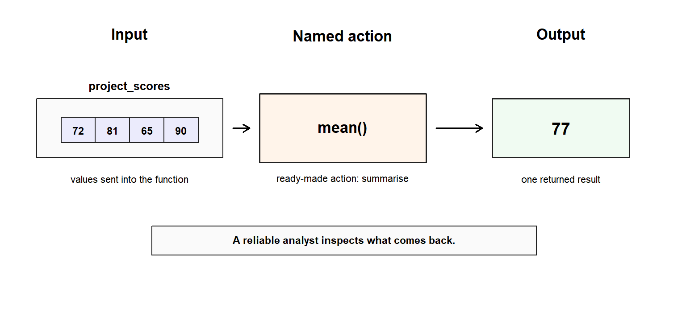

Code
project_scores <- c(72, 81, 65, 90)
mean(project_scores)
#> [1] 77Leo has just learned that R can make judgments. It can test whether a score is above a threshold, combine conditions, and return TRUE or FALSE.
Then another pattern begins to appear.
Some actions do not need to be built from scratch.
project_scores <- c(72, 81, 65, 90)
mean(project_scores)
#> [1] 77length(project_scores)
#> [1] 4round(82.567, digits = 2)
#> [1] 82.57tolower("Nigeria")
#> [1] "nigeria"Leo did not write the internal rules for these actions. R already knows how to calculate a mean, count values, round a number, and change text to lowercase. Leo only has to call the right action, give it the right input, and inspect what comes back.
That is the doorway into functions.
A function is not a mysterious command to memorise. It is a named action. It receives input, performs work, and returns output.
This chapter teaches built-in functions as R’s ready-made action system. By the end, Leo should be able to read a function call, identify its input and arguments, inspect its output, and recognise the main beginner families of functions without trying to memorise a catalogue.
Chapter 7 showed that logic helps R make judgments.
score <- 82
score >= 50
#> [1] TRUEThe expression asks a question. R returns a logical answer.
Chapter 8 shifts from judgment to action. Instead of asking only, “Is this condition true?”, Leo now asks:
What action do I want R to perform?
That action may inspect an object, summarise values, convert a type, clean simple text, handle missing values, or work with dates. R already provides many such actions in its standard system.
The important move is not to memorise them all. The important move is to understand how a function call works.
A comparison operator asks a question:
score > 80
#> [1] TRUEA function performs an action:
mean(project_scores)
#> [1] 77Both are structured code, but they do different jobs. Operators helped Leo understand calculation, comparison, assignment, and logic. Functions now give him a larger system of named actions.
A function is a named action: it receives input, performs work, and returns output.
The same idea can be written as a simple movement:
input → function action → outputThis small model protects Leo from treating functions as magic. Every time he sees a new function, he can ask: What goes in? What action happens? What comes back?
The same idea can be seen as a simple movement. A function receives something, applies a named action, and returns something.
The figure below uses mean(project_scores) as a small example. The values go into the ready-made action mean(), and one summary value comes back.

As shown in Figure fig-function-input-action-output, a function call is not magic. project_scores supplies the input. mean() names the action. The output is the value returned by that action.
This small model protects Leo from trying to memorise functions as isolated commands. Each time he meets a new function, he can ask three practical questions: What goes in? What action is being called? What comes back?
A function call has a recognisable shape.
round(82.567, digits = 2)
#> [1] 82.57In that line:
round is the function name;82.567 is the main input;digits = 2 is an argument that shapes the action;The general form is:
function_name(input, argument = value)The name tells R which action to perform. The parentheses turn the name into a call. The input and arguments tell R what to act on and how the action should behave.
A missing parenthesis, wrong argument, wrong input type, or unexpected missing value can change the result. Function literacy is not only knowing names. It is reading the structure of the call.
When R meets a function call, it follows a practical sequence.
R looks for the function name, evaluates the inputs inside the parentheses, sends those inputs to the function, and returns a result. Leo’s job is to inspect the result before he trusts it.
If the required inputs are missing or incompatible, the function may return an error, warning, or unexpected result.
For example:
scores <- c(72, 81, 65, 90)
mean(scores)
#> [1] 77R first finds mean(). It then evaluates scores, sends the values into the function, and returns the average.
Calling the function is not the end of the work. A reliable analyst checks what came back.
Arguments tell a function how to behave.
Some functions need only one main input:
length(scores)
#> [1] 4Some functions accept extra instructions:
round(76.7525, digits = 2)
#> [1] 76.75The argument digits = 2 tells round() how many decimal places to keep.
Named arguments are often clearer for beginners because they make the role of each value visible.
round(x = 76.7525, digits = 2)
#> [1] 76.75A positional version can also work:
round(76.7525, 2)
#> [1] 76.75The second version is shorter, but the first version is easier to read. In a serious workflow, clarity often matters more than saving a few keystrokes.
When a function confuses Leo, one useful question is:
What is each argument doing?
That question turns the call from a memorised spell into a readable instruction.
Prediction turns function use into reasoning.
Before running the next chunk, pause and answer two questions:
project_scores <- c(72, 81, 65, 90)
mean(project_scores)
#> [1] 77
length(project_scores)
#> [1] 4mean() summarises the values into an average. length() counts how many values are present. They both receive the same input, but they perform different actions.
This is why function names matter. The input alone does not decide the result. The action also matters.
Output inspection is part of reliable R work.
A function can return a number, text, a logical value, a vector, a table-like object, a date, a plot, or something more complex. The printed result may not tell the whole story.
Use inspection functions when the output matters:
average_score <- mean(project_scores)
class(average_score)
#> [1] "numeric"
typeof(average_score)
#> [1] "double"For larger objects, Leo may use functions such as:
str(project_scores)
#> num [1:4] 72 81 65 90
summary(project_scores)
#> Min. 1st Qu. Median Mean 3rd Qu. Max.
#> 65.00 70.25 76.50 77.00 83.25 90.00
length(project_scores)
#> [1] 4
is.na(project_scores)
#> [1] FALSE FALSE FALSE FALSEsummary() adapts its output to the kind of object it receives.
These functions are small, but they create a serious habit: inspect before trust.
Calling a function is not the end of the work. A reliable analyst checks what came back.
R contains many functions. Chapter 8 does not need to become a dictionary.
For now, Leo needs a beginner core: functions that help him combine, inspect, check, convert, summarise, handle missing values, work with text, and work with dates. These are the functions that appear again and again in practical data work.
The advanced families still matter, but they do not all belong in Leo’s everyday toolkit yet. They will make more sense when a real need appears.
The next sections focus on this beginner core.
The function c() combines values.
study_hours <- c(5, 7, 4, 8)
study_hours
#> [1] 5 7 4 8The function length() measures how many values are present.
length(study_hours)
#> [1] 4The function seq() creates a sequence.
seq(from = 1, to = 5)
#> [1] 1 2 3 4 5The function rep() repeats values.
rep("practice", times = 3)
#> [1] "practice" "practice" "practice"These functions are not dramatic, but they are foundational. They help Leo create and check small objects before working with larger data.
Summary functions reduce many values into a smaller result.
project_scores <- c(72, 81, 65, 90)
sum(project_scores)
#> [1] 308
min(project_scores)
#> [1] 65
max(project_scores)
#> [1] 90
range(project_scores)
#> [1] 65 90
mean(project_scores)
#> [1] 77
median(project_scores)
#> [1] 76.5Each function answers a different question.
sum() asks for the total. max() asks for the highest value. range() asks for the lowest and highest values. It returns both values together as a vector. mean() asks for the average. median() asks for the middle value.
Logical summaries connect directly to Chapter 7.
passed <- project_scores >= 70
any(passed)
#> [1] TRUE
all(passed)
#> [1] FALSEany() asks whether at least one value is TRUE. all() asks whether every value is TRUE.
This is a useful bridge. Chapter 7 taught Leo how R makes judgments. Chapter 8 shows how functions can summarise those judgments.
Real data often contains NA.
scores_with_na <- c(72, 81, NA, 90)
mean(scores_with_na)
#> [1] NAR returns NA because one value is missing. The function is not broken. It is being cautious because the average cannot be known completely from the available values unless Leo decides how to handle the missing value.
One common argument is na.rm = TRUE.
mean(scores_with_na, na.rm = TRUE)
#> [1] 81The argument means: remove missing values before calculating.
The same pattern appears in several summary functions:
sum(scores_with_na, na.rm = TRUE)
#> [1] 243
min(scores_with_na, na.rm = TRUE)
#> [1] 72
max(scores_with_na, na.rm = TRUE)
#> [1] 90But na.rm = TRUE is not an automatic repair. It is an analytical decision.
Do not treat na.rm = TRUE as a magic fix. It removes missing values from that calculation. It does not explain why the values are missing or whether excluding them is appropriate.
Special values require special care. The function can help, but the analyst still owns the decision.
Checking functions ask what an object is.
is.numeric(25)
#> [1] TRUE
is.character("Nigeria")
#> [1] TRUE
is.logical(TRUE)
#> [1] TRUE
is.na(NA)
#> [1] TRUEConversion functions attempt to change values.
as.numeric("25")
#> [1] 25
as.character(25)
#> [1] "25"
as.logical(1)
#> [1] TRUENumeric conversion to logical follows R’s coercion rules: 0 becomes FALSE, and non-zero values become TRUE.
Conversion can also fail.
Before running the next chunk, predict what will happen. Which conversion succeeds? Which one produces a warning?
as.numeric("Leo")
#> Warning: NAs introduced by coercion
#> [1] NAR cannot turn the word "Leo" into a meaningful number, so it returns NA and warns the user. That warning is useful information. A failed conversion can introduce missing values into an analysis.
A safer habit is:
inspect → convert → inspect againThe habit is small. The protection is large.
Text data appears constantly in real datasets: names, countries, categories, labels, comments, and identifiers.
Create a small text value:
country <- " Nigeria "Remove leading and trailing spaces:
trimws(country)
#> [1] "Nigeria"Standardise case:
tolower(country)
#> [1] " nigeria "
toupper(country)
#> [1] " NIGERIA "Count characters:
nchar(country)
#> [1] 9Join text:
paste("Hello", "Leo")
#> [1] "Hello Leo"
paste0("ID_", 1001)
#> [1] "ID_1001"Find a pattern:
grepl("Nig", country)
#> [1] TRUEReplace text:
gsub("Nigeria", "NG", trimws(country))
#> [1] "NG"Text functions quickly become practical. "Nigeria", " Nigeria", "nigeria", and "NIGERIA" may look like the same country to a human reader, but R does not automatically treat them as identical.
For now, the action map is simple: trim, change case, count, join, find, and replace.
Dates may look like text, but R needs date objects to calculate time correctly.
enrolment_date <- as.Date("2026-04-28")
enrolment_date
#> [1] "2026-04-28"
class(enrolment_date)
#> [1] "Date"A date stored as text may print neatly, but it will not behave like a real date in ordering, comparison, filtering, or time differences.
Calculate a time difference:
start_date <- as.Date("2026-04-01")
end_date <- as.Date("2026-04-28")
end_date - start_date
#> Time difference of 27 daysFormat a date for display:
format(enrolment_date, "%B %d, %Y")
#> [1] "April 28, 2026"Create a short date sequence:
seq.Date(
from = as.Date("2026-04-01"),
to = as.Date("2026-04-05"),
by = "day"
)
#> [1] "2026-04-01" "2026-04-02" "2026-04-03" "2026-04-04" "2026-04-05"The key lesson is not advanced date handling. The lesson is that functions can turn date-like text into date-aware values and then perform time-aware actions.
Formatting controls display.
score_value <- 82.567
round(score_value, digits = 2)
#> [1] 82.57Some formatting functions return text.
formatted_score <- sprintf("%.2f", score_value)
formatted_score
#> [1] "82.57"
class(formatted_score)
#> [1] "character"This is useful for labels and reports, but it matters if Leo wants to calculate later. A value that looks numeric after formatting may be character text.
Sampling creates selected values.
Random sampling normally changes each time the code runs.
learner_ids <- paste0("L", 1001:1005)
set.seed(123)
sample(learner_ids, size = 2)
#> [1] "L1003" "L1002"set.seed() fixes the random starting point so the same sample can be reproduced.
set.seed() makes this random-looking result reproducible. When randomness enters a workflow, reproducibility needs attention.
Now Leo can use several built-in functions together without doing full data analysis.
project_scores <- c(72, 81, 65, 90)
study_hours <- c(5, 7, 4, 8)
mean(project_scores)
#> [1] 77
max(project_scores)
#> [1] 90
length(project_scores)
#> [1] 4He can round a summary:
round(mean(project_scores), digits = 1)
#> [1] 77He can use Chapter 7 logic and then summarise the judgments:
high_scores <- project_scores >= 80
high_scores
#> [1] FALSE TRUE FALSE TRUE
sum(high_scores)
#> [1] 2He can calculate a simple ratio and make it readable:
score_per_hour <- project_scores / study_hours
round(score_per_hour, digits = 2)
#> [1] 14.40 11.57 16.25 11.25This is still a small example. But it is no longer only syntax practice. Leo has used ready-made actions to inspect, summarise, compare, and report a small set of learner values.
That is a momentum win.
This map is not a memorisation list.
Leo does not need to master every function family in one sitting. The purpose of the map is to help him recognise that functions have jobs. Some inspect objects. Some summarise values. Some transform text. Some work with dates. Some help with randomness, formatting, matrices, graphics, files, or the R session itself.
For now, Leo should focus on the beginner core: combining, inspecting, checking, converting, summarising, handling missing values, working with text, and working with dates. The remaining families are previews. They are included so that later chapters feel connected, not so that Leo has to memorise them immediately.
| Tier | Function family | Examples | Beginner purpose |
|---|---|---|---|
| Beginner core | Combine and measure | c(), length(), seq(), rep() |
Create and check small objects |
| Beginner core | Inspect objects | str(), class(), typeof(), summary() |
See what R sees |
| Beginner core | Summarise values | sum(), mean(), median(), min(), max() |
Reduce values into useful summaries |
| Beginner core | Handle missing values | is.na(), complete.cases(), na.rm = TRUE |
Find or manage missingness carefully |
| Beginner core | Check and convert | is.numeric(), as.numeric(), as.character() |
Confirm or change what R is working with |
| Beginner core | Work with text | trimws(), tolower(), paste(), grepl(), gsub() |
Clean and prepare simple text values |
| Beginner core | Work with dates | as.Date(), format(), seq.Date() |
Turn date-like values into date-aware values |
| Useful soon | Format and sample | round(), sprintf(), sample(), set.seed() |
Prepare output and make examples reproducible |
| Preview only | Repeat actions | lapply(), sapply(), apply() |
Repeat a function across objects or structures |
| Preview only | Diagnose and protect workflows | traceback(), debug(), tryCatch(), stop(), warning() |
Investigate or respond to problems later |
| Preview only | Work with files, sessions, packages, and systems | getwd(), list.files(), sessionInfo(), library() |
Manage larger workflows later |
The table gives orientation. It is not a test.
A learner who memorises names becomes anxious when a new function appears. A learner with a map asks a better question:
What job is this function trying to do?
Some functions matter later but do not belong in Leo’s everyday beginner toolkit yet.
These include tools for:
Leo will learn these when the workflow creates a real need for them.
Before leaving Chapter 8, Leo needs one more boundary.
Not every ready-made R tool is a function.
Operators shape expressions:
10 + 5
score >= 50
x <- 10Language constructs control execution:
if
else
for
while
next
breakFunctions perform named reusable actions:
mean(project_scores)
round(82.567, digits = 2)
tolower("Nigeria")These categories often work together. A function can receive a logical expression as an argument. An operator can appear inside a function call. A language construct can decide whether a function runs. But their roles are not identical.
Chapter 7 taught operators and logic. Chapter 8 teaches functions. Chapter 9 will show how Leo can create small named actions of his own.
R also has package-based functions.
Later, Leo will meet functions such as:
filter()
select()
mutate()
summarise()
ggplot()Those functions usually come from packages such as dplyr and ggplot2.
This does not mean package functions rescue Leo from Base R. A better frame is:
Base R teaches the structure of the language. Tidyverse later provides a different grammar for expressing common data workflows. Many R users benefit from understanding both approaches.
The package may change, but the basic function questions remain the same:
Once that model is secure, package functions become less intimidating.
R has built-in help.
?mean
help(mean)
??correlationDocumentation can look dense at first. Leo does not need to understand every line immediately. He can begin with practical questions:
A professional R user does not remember everything. A professional R user knows how to investigate.
That is how Leo becomes less dependent on copied code: inspect the help page, test a small example, and check the output.
Mistakes with functions are normal. The goal is to recognise the pattern and repair it before it spreads.
| Mistake | What goes wrong | Safer habit |
|---|---|---|
| Forgetting parentheses | R sees a name, not a function call | Use mean(scores), not mean scores |
| Supplying the wrong type | The function receives values it cannot use properly | Check with class() or str() |
| Ignoring missing values | Summary functions may return NA |
Inspect missingness before using na.rm = TRUE |
| Confusing display with type | A formatted result may be character text | Check the class after formatting |
| Treating every tool as a function | Operators and language constructs follow different rules | Ask what role the tool is playing |
| Hiding errors too early | Error handling can conceal a problem | Understand the error before protecting against it |
One example is worth seeing again. This looks tidy:
sprintf("%.2f", 82.567)
#> [1] "82.57"But the result is text.
class(sprintf("%.2f", 82.567))
#> [1] "character"The screen shows appearance. Inspection reveals behaviour.
Leo is not expected to memorise the function catalogue, understand advanced evaluation, use tryCatch(), master the apply family, build package workflows, or write his own functions yet.
He is expected to understand the function model: name, input, arguments, action, output, and inspection.
That is enough for this chapter.
Create these objects:
scores <- c(70, 82, 91, 64, NA)
country <- " Nigeria "Before running each function, predict what kind of output it will return.
length(scores)
#> [1] 5
summary(scores)
#> Min. 1st Qu. Median Mean 3rd Qu. Max. NA's
#> 64.00 68.50 76.00 76.75 84.25 91.00 1
mean(scores, na.rm = TRUE)
#> [1] 76.75
round(mean(scores, na.rm = TRUE), digits = 1)
#> [1] 76.8
trimws(country)
#> [1] "Nigeria"
tolower(country)
#> [1] " nigeria "Now reflect:
The point is not speed. The point is recognition.
By the end of this chapter, Leo can:
Leo no longer sees functions as scattered commands. He sees them as named actions in a larger system.
Leo now knows how to use many actions R already provides.
But a new signal begins to appear: repetition.
country <- tolower(trimws(country))
background <- tolower(trimws(background))
completion_status <- tolower(trimws(completion_status))
r_experience_level <- tolower(trimws(r_experience_level))Each line works. That is exactly why the danger is easy to miss. The same idea is scattered across several places, and each copy must remain consistent.
If Leo later changes the rule in one place but forgets another, the workflow begins to drift. If one copied line contains a small typo, the error hides inside a pattern that looks familiar.
This is the doorway into Chapter 9. Leo has learned to use R’s ready-made actions. Next, he will learn what to do when the action he needs is his own repeated idea.
Chapter 8 showed Leo how to call actions R already knows. Chapter 9 asks how Leo can name and build small actions of his own.